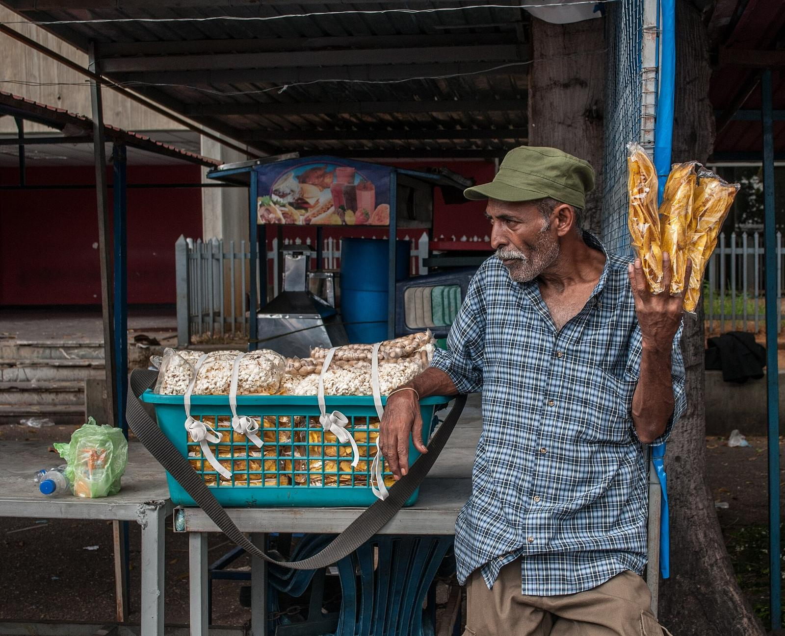

Le vieux marché couvert rouvre ses portes après deux ans de travaux
Charpente restaurée, étals rénovés, et une place nouvelle pour les producteurs de la région : le cœur du quartier bat à nouveau.

Ils étaient plus de trois mille, samedi matin, à se presser sous la grande verrière. Il faut dire que l'attente avait été longue : fermé depuis l'hiver {{YEAR}} pour une rénovation complète, le marché couvert était devenu le sujet de toutes les conversations.
La charpente métallique, classée, a été démontée pièce par pièce, sablée puis remontée. Les vingt-quatre étals ont retrouvé leurs carreaux de faïence d'origine ; les éclairages, eux, sont neufs et consomment dix fois moins.
Une place pour les jeunes producteurs
Nouveauté : six emplacements sont réservés aux producteurs installés depuis moins de cinq ans. « On voulait que le marché ressemble au quartier d'aujourd'hui », explique l'architecte du projet.
Le marché est ouvert du mardi au dimanche, de 7 h à 14 h, et le vendredi jusqu'à 20 h pour le marché du soir.